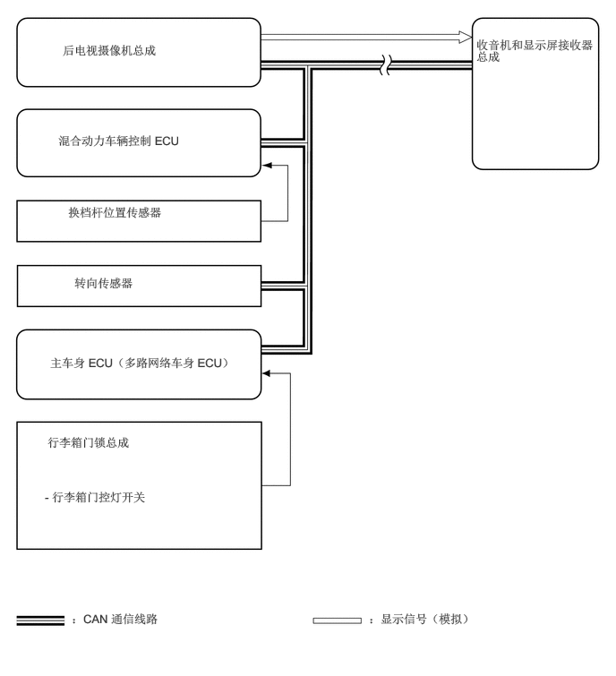

0.729,0.5 3.219,1.094
2.479,0.583
10
false
后电视摄像机总成
0.677,1.552 3.094,2.177
2.406,0.615
10
false
混合动力车辆控制 ECU
0.792,2.385 2.573,2.729
1.771,0.333
10
false
换档杆位置传感器
0.865,3.208 2.052,3.563
1.177,0.344
10
false
转向传感器
0.583,4.135 2.802,4.823
2.208,0.677
10
false
主车身 ECU（多路网络车身 ECU）
0.552,5.063 2.656,5.729
2.094,0.656
10
false
行李箱门锁总成
0.521,5.698 2.958,6.313
2.427,0.604
10
false
- 行李箱门控灯开关
5.542,0.438 6.979,1.323
1.427,0.875
10
false
收音机和显示屏接收器总成
0.833,7.115 2.719,7.458
1.875,0.333
10
false
：CAN 通信线路
4.292,7.115 6.177,7.458
1.875,0.333
10
false
：显示信号（模拟）